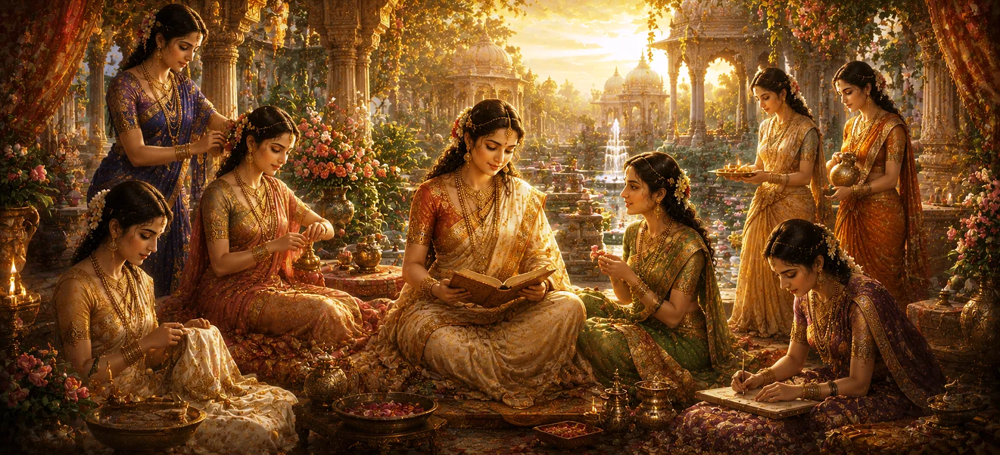

The Nature and Conduct of Women
Moving forward from the helpless innocence of infancy detailed in Chapter 23, Chapter 24 of Uma Samhita shifts its focus to the mature social and spiritual dimensions of life in The Nature and Conduct of Women. Exploring the sacred principles of Stree Dharma, the scripture outlines the inherent qualities, moral responsibilities, and spiritual stature of women within family and societal structures under the divine guidance of Lord Shiva and Devi Uma.
This chapter details the foundational virtues of compassion, devotion, patience, domestic harmony, and righteous conduct that sustain both household stability and spiritual elevation.
Core Topics in This Text (11 Pillars)
- 01 The Feminine Essence as an Embodiment of Shakti →
- 02 The Supreme Virtues of Compassion and Patience →
- 03 Devotion and the Management of Household Duties →
- 04 The Pillar of Family Harmony and Unity →
- 05 Dignity, Grace, and Restraint in Speech and Action →
- 06 Engagement in Spiritual Vows, Worship, and Vratas →
- 07 The Practice of Hospitality and Generous Charity →
- 08 The Vital Role in Shaping the Moral Values of Children →
- 09 Inner Strength and Resilience During Adversity →
- 10 The High Honor and Respect Accorded to Women in Society →
- 11 Transitioning from Social Conduct to the Signs of Death →
1. The Feminine Essence as an Embodiment of Shakti
This opening section establishes that the feminine principle in creation is a direct terrestrial manifestation of cosmic Shakti, mirroring the supreme energy of Devi Uma.
Uma Samhita declares that recognizing and honoring this divine essence is essential for spiritual balance and harmonious worldly existence.
2. The Supreme Virtues of Compassion and Patience
The text extols compassion (daya) and patience (kshama) as the crowning ornaments of womanhood. These virtues enable the household to weather emotional and material storms with grace.
A woman anchored in these qualities acts as a stabilizing anchor for the entire family.
3. Devotion and the Management of Household Duties
Uma Samhita describes the skillful management of domestic affairs combined with steady devotion to Lord Shiva as a sacred spiritual practice in itself.
When daily duties are performed with sacred intent, the home transforms into a place of worship and peace.
4. The Pillar of Family Harmony and Unity
The scripture highlights the vital role women play in bridging differences among family members, fostering mutual respect, and maintaining emotional cohesion across generations.
Harmony within the household is portrayed as the bedrock upon which broader societal peace is built.
5. Dignity, Grace, and Restraint in Speech and Action
Uma Samhita emphasizes that graceful speech, modesty, and emotional restraint protect personal dignity and inspire respect from all members of society.
Controlled and thoughtful communication prevents discord and nurtures lasting affection.
6. Engagement in Spiritual Vows, Worship, and Vratas
The text details the importance of women participating in sacred vows (vratas), fasting, and regular worship of deities, which purify the mind and accumulate spiritual merit.
Such disciplined spiritual practices strengthen faith and align the household with divine grace.
7. The Practice of Hospitality and Generous Charity
Uma Samhita praises the virtue of welcoming guests with warmth and practicing charity towards the needy (atithi seva and dana) as central duties of righteous women.
Open-handed generosity brings prosperity and divine blessings to the home.
8. The Vital Role in Shaping the Moral Values of Children
As the primary nurturers, mothers are assigned a paramount role in imparting moral education, spiritual stories, and righteous values to their children during their formative years.
This foundational guidance ensures the continuity of culture, righteousness, and devotion across generations.
9. Inner Strength and Resilience During Adversity
Uma Samhita notes that women possess profound inner resilience, often holding families together with unwavering courage and faith when facing severe trials or crises.
This quiet fortitude is celebrated as a manifestation of divine inner power.
10. The High Honor and Respect Accorded to Women in Society
The text explicitly mandates that societies where women are honored, protected, and respected flourish in prosperity and spiritual grace, while those that disrespect women face decline.
This principle underscores the moral imperative of gender respect in Puranic philosophy.
11. Transitioning from Social Conduct to the Signs of Death
Having expounded the elevenfold principles of feminine nature, righteous conduct, and domestic virtues, Uma Samhita prepares to transition from worldly duties to the ultimate truth of existence, focusing in the next chapter on the signs and time of death.
This transition links the daily duties of mortal life with the inevitable spiritual realities that every soul must eventually confront.
Spiritual Insight
Chapter 24 teaches us through eleven foundational pillars that women embody the sacred energy of Shakti, sustaining families and society through compassion, patience, and devotion. Honoring this divine feminine essence brings peace, prosperity, and spiritual grace to all.
Frequently Asked Questions
① How does Uma Samhita portray the fundamental nature of women?
The text portrays women as earthly embodiments of Shakti, characterized by deep compassion, patience, intuition, and the vital role of sustaining family and societal harmony.
② What are the core virtues emphasized for righteous conduct?
Key virtues include devotion to truth, steadfast loyalty, hospitality, patience under trials, and the practice of household worship and charity.
③ How does this chapter connect to the surrounding chapters?
It builds upon the developmental journey from infancy by examining mature social and spiritual responsibilities before transitioning to the inevitability of human mortality in the next chapter.